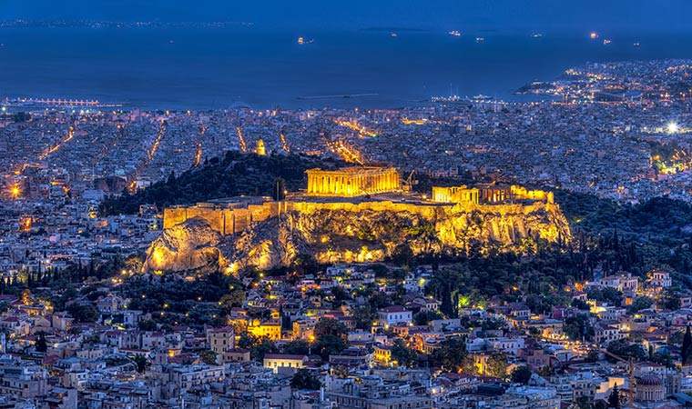
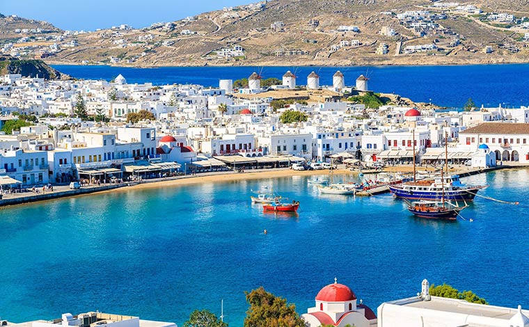
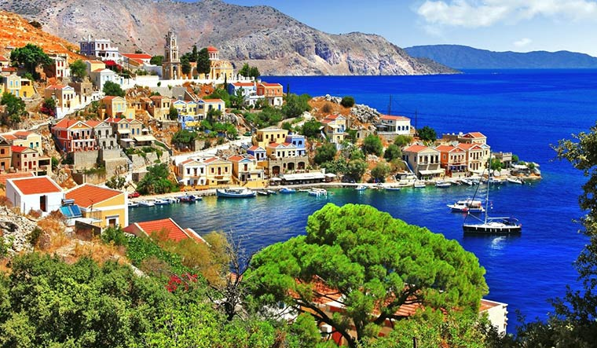
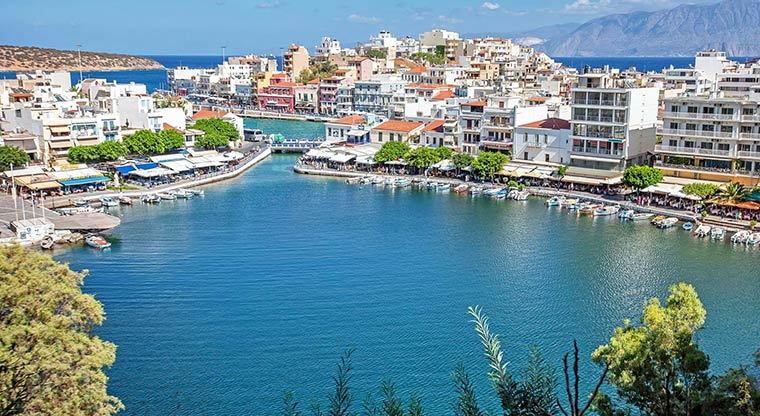
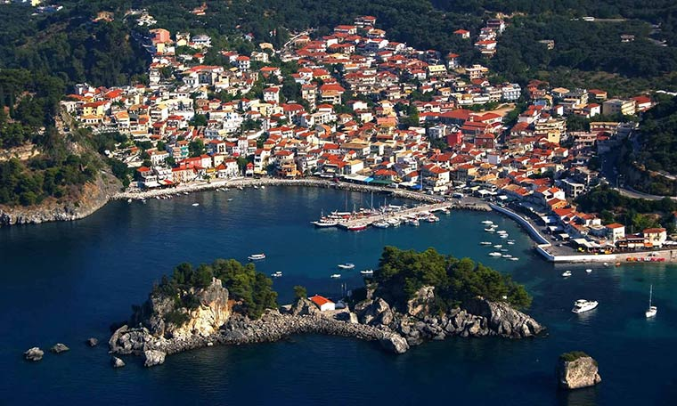

Топ городов Греции обязательных к посещению
Топ городов Греции обязательных к посещению
10 самых красивых городов Греции

Красивейший город Греции, столица Афины негласно считается местом рождения западной цивилизации. Название дано в честь богини, покровительствующей знаниям, военному делу, ремеслам, являющуюся символом мудрости. В различных исторических эпохах город пережил взлеты и падения, после времени забвения он начал возрождаться в XIX веке, стремительно приобретая политический вес и значимость.
С высоты птичьего полета этот живописный город Греции похож на белоснежную игрушку, настолько в нем все яркое и компактное. Он находится в северо-западной части острова Санторини. Высота над уровнем моря около 100 метров. Ия будто в последнее мгновенье остановился у самого края высокого холма, с осторожностью приглядываясь к кромке прибоя.

Многие согласятся, что Миконос – самый красивый город Греции. Носит то же название, что и остров. Знаменит круизным портом, комфортабельными пляжами и необычными историческими достопримечательностями. Самыми яркими считается Старый квартал и ветряные мельницы. В археологическом музее хранится уникальная коллекция артефактов, найденных в «Яме Очищения».
Линдос признан историческим памятником мирового значения. Для сохранения архитектурных особенностей ограничено строительство современных зданий, запрещено движение на транспорте.

Сими – сказочно красивый греческий городок, расположенный на одноименном острове. Это место манит разноцветьем и буйными красками. Яркие стены домов так непохожи на спокойную белизну Ии или сдержанные тона Миконоса. Самой посещаемой достопримечательностью на острове считается крепость Кастро.
Остров Иос расположен на юге Эгейского моря. Хора является основным населенным пунктом. Особых достопримечательностей в нем нет, зато вокруг расположилось целое ожерелье великолепных пляжей, организуются экскурсии в ущелье Имброз, а в лабиринтах узких мощеных камнем улочках прячутся фасады старинных домов и небольших белоснежных церквушек, где царит спокойствие и умиротворение. Удачным завершением прогулки будет посещение квартала «Маленькая Венеция».

Очень колоритный и удивительно красивый город в Греции, полный природных и архитектурных памятников. Считается одним из самых посещаемых туристами, которых прельщают роскошные морские виды из бухты Мирабелло и уникальный климат. Остров Крит интересен и для любителей пляжного отдыха и для ценителей истории.
Один из самых необычных городов Греции, занимает часть лесистого полуострова около живописного озера. Сюда редко приезжают за достопримечательностями. Главное достояние города — меха и шубы. Исторически сложилось так, что поселение расположилось в оживленном месте, где пересекались торговые пути. Традиционным промыслом была добыча пушнины.

Изысканная красота курортного города Парга привлекает архитектурными памятниками. Он изогнулся по линии побережья, приобретая форму подковы. Говорят, это на счастье. Действительно, на курорте всегда оживленно и многолюдно. Для гостей города организуются экскурсии в Венецианскую крепость и твердыню Ангуз, замок Айя, построенный для Али-паши в начале XIX века, заброшенную деревушку Врахонас. Ривер-треккинг по долине реки Ахерон перенесет в мир мифов, где Харон перевозит души в царство Аида, а остров Панаги восхитит очаровательным замком и церковью с небольшой колокольней.
Временем основания города называют микенский период. Он расположен на полуострове Арголида. В разные исторические эпохи город постоянно менял владельцев, возвращаясь под управление турков, что придало ему неподражаемый колорит, образованный смешением архитектурных стилей. Самыми значительными памятниками архитектуры считаются замок Паламиди на скалистом холме и небольшая островная крепость Бурдзи в гавани.